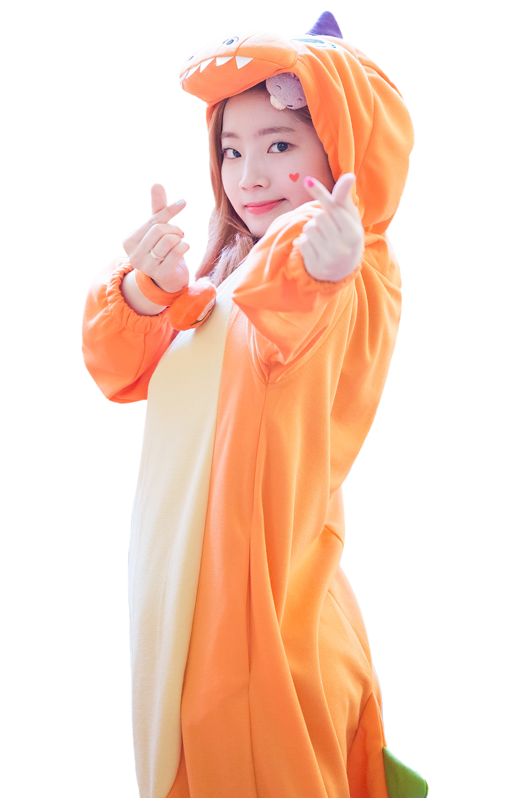

Please open on Desktop
Im Na-yeon
Im Na-yeon (Hangul: 임나연, Japanese: イム ナヨン), better known by her stage name, Nayeon (Hangul: 나연, Japanese: ナヨン) is a South Korean singer. She is the oldest member, lead vocalist and face of the girl group Twice.
On September 22, 1995 in Seoul, South Korea, Nayeon was born into a Christian family that consists of her parents and younger sister by three years, Im Seo-yoon. Nayeon secretly tried out and passed JYP Entertainment's 7th Open Audition and became a trainee on September 15, 2010. In 2013, she was cast as a member of 6mix, a JYP girl group that was planned but never debuted. Prior to Sixteen and her debut as a member of Twice, she appeared in few television advertisements and in several music videos of her label mates, including Jun. K's "No Love", Got7's "Girls Girls Girls" and miss A's "Only You." She also made a cameo appearance in the second episode of KBS2's 2012 Korean drama Dream High 2. In 2017, she, along with Nichkhun, starred in the music video of Jun. K's "Your Wedding".
Yoo Jeong-yeon
Yoo Jeong-yeon (Hangul: 유정연, originally named Yoo Kyung-wan) better known by her first name, Jeongyeon (Hangul: 정연), is a South Korean singer. She is a member of the girl group, Twice, as a lead vocalist of the group.
Jeongyeon was born on November 1, 1996 in Suwon, South Korea and was given the name Kyung-wan, at birth, due to being teased as a child, for this sounding like a boy's name, she legally changed her name to Jeong-yeon in the third grade. Her father is Yoo Chang-joon, who works as a chef for former president Kim Dae-jung, her mother's identity has not been revealed to the public. Jeongyeon has two older sisters, the eldest one is known professionally as Gong Seung-yeon and is an actress, the second eldest is named Yoo Seo-yeon and is an office worker. Jeongyeon trained to become a singer from a young age, and also learnt to play the trumpet and saxophone. Jeong-yeon joined JYP Entertainment in JYP Entertainment's 6th Open Audition on March 1, 2010. Like Nayeon, Jihyo and Sana, JYP originally planned her to become a member of a girl group named 6Mix, but their debut was unfortunately cancelled. Jeongyeon made her breakthrough in 2015 as a contestant on the reality girl group survival show Sixteen and was finally chosen as a member of Twice.
dahyun
Kim Da-hyun
Kim Da-hyun (Hangul: 김다현), better known by her first name, Dahyun (Hangul: 다현), is a South Korean singer and rapper. She is a vocalist and the lead rapper of the group.
Dahyun first gained attention in sixth grade after a video of her at church performing a "head-banging, wing-flapping, and thoroughly irrepressible dance" to Hillsong's "The Power of Your Love" went viral on YouTube in 2011 and earned her the moniker "Eagle Dance Church Sister." In middle school, she performed a solo in a youth dance festival and was scouted by JYP Entertainment. She auditioned for the company on July 7, 2012, and officially became a trainee. She later appeared in the music video of Got7's "Stop Stop It" as the main story character and Wooyoung's "R.O.S.E". She graduated from Hanlim Multi Art School in February 2017.
tzuyu